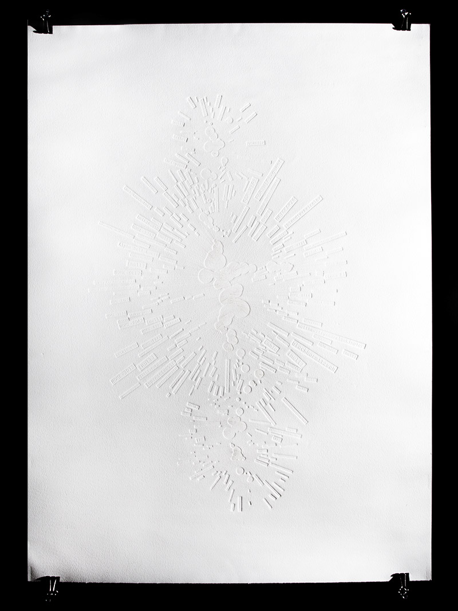
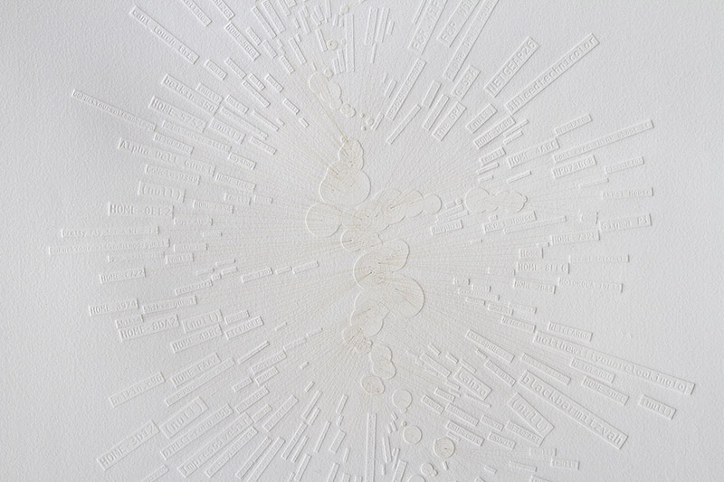
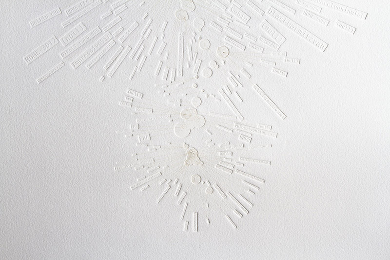
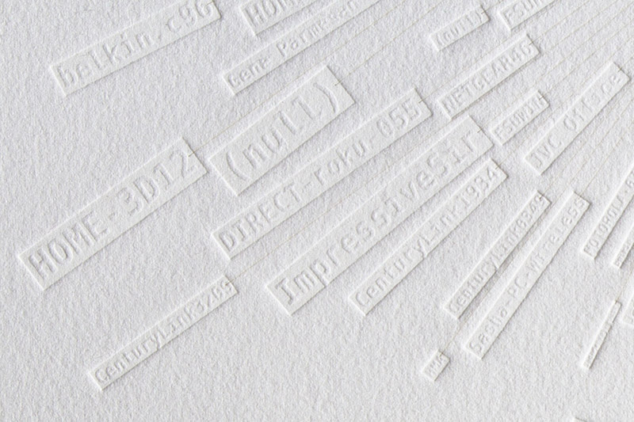
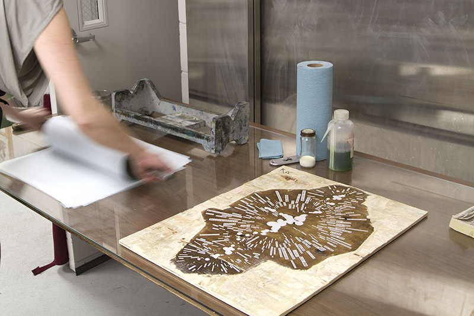
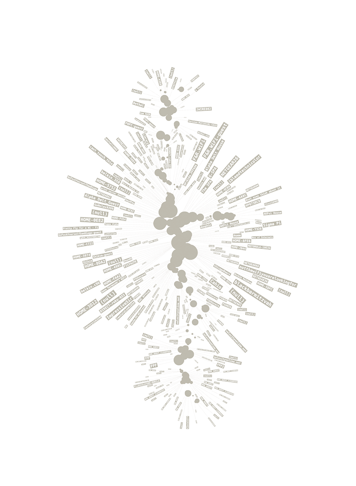

Tallahassee Fiber Loop

In February and March 2014, Sam Kronick was invited to be formLab Project Fellow at the Facility for Arts Research at Florida State University. He led a workshop with FSU students to walk the path of the Tallhassee Fiber Loop and produced a series of prints (with Small Craft Advisory Press) documenting the invisible topography of WIFI networks along the route.

Kronick logged every WIFI network name that was detected as the group walked the path of the Fiber Loop. These names were plotted according to their geographic location and relative signal strength to generate a graphic which was etched into a plywood plate and printed using a traditional etching press. The resulting image is barely legible as debossed text and laser-etched lines on paper.
The weight of the printing press impacts the lightness of paper just as heavy infrastructure generates a layer of text to be read out of thin air.




